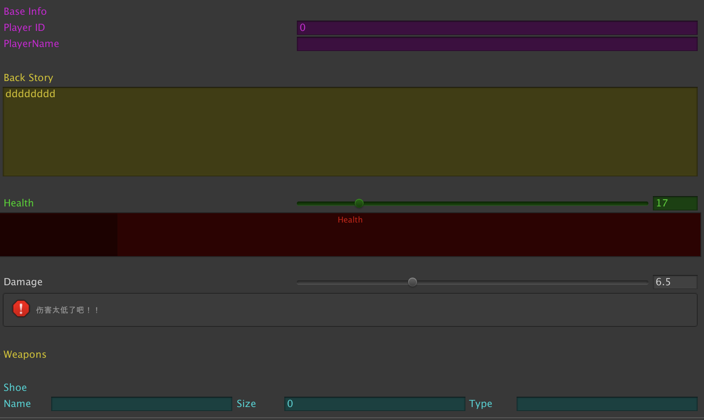

一、编辑器开发入门
编辑器扩展概念
Unity编辑器扩展是对现有的Unity进行自定义功能扩展的一种方法，可以简化一些重复的开发动作，也可以用于制作插件。
Unity的编辑器扩展绝大部分是用于unity的编辑器模式下，我们扩展的方法是为了提高开发效率。
但这些方法在游戏运行时并没有作用，不需要将他们打包进工程，所以我们需要把这些不需要打包的资源和脚本放在名字是Editor的文件下，这个文件可以是根目录也可以是子目录。
编辑器扩展包含：插件拓展、组件拓展
1、Editor文件夹
01、 Editor文件夹名字是固定的，大小写固定。
02、 Editor文件夹下放的是与编辑器相关的文件。
03、 Editor文件夹下所有资源是不会被打包的。
2、添加菜单栏“自定义按钮”——MenuItem
namespace Editor
{
public static class LJK_Tools
{
[MenuItem("LJKTools/testTools01/001")] // MenuItem特性
static void TestEditorScripting001()
{
Debug.Log("测试编辑器在菜单栏的拓展——001其中一个方法也执行了！！！");
}
[MenuItem("LJKTools/testTools01/002")] // 两个路径
static void TestEditorScripting002()
{
Debug.Log("测试编辑器在菜单栏的拓展——001另一个方法也执行了！！！");
}
[MenuItem("Window/testLJKTools03")]
static void TestEditorScripting003()
{
Debug.Log("测试编辑器在菜单栏的拓展——003另一个方法也执行了！！！");
}
}
}
//第一个参数为菜单的路径；
//第二个参数，用来判断是否是有效函数，是否需要显示；
//第三个参数priority优先级，优先级默认值为1000，数值差大于10的值，会分栏。
[MenuItem("LJKTools/testTools01/001",false,1)] //特性的应用
static void TestEditorScripting001()
{
Debug.Log("测试编辑器在菜单栏的拓展——001其中一个方法也执行了！！！");
}
[MenuItem("LJKTools/testTools01/002",false,1)]
static void TestEditorScripting002()
{
Debug.Log("测试编辑器在菜单栏的拓展——002另一个方法也执行了！！！");
}
[MenuItem("LJKTools/testTools02",false,12)]
static void TestEditorScripting004()
{
Debug.Log("测试编辑器在菜单栏的拓展——02_004另一个方法也执行了！！！");
}
[MenuItem("LJKTools/testLJKTools03",false,23)]
static void TestEditorScripting003()
{
Debug.Log("测试编辑器在菜单栏的拓展——003另一个方法也执行了！！！");
}
第二个参数，用来判断是否是有效函数，是否需要显示；用Validate方法启动为ture来验证是否需要显示！
[MenuItem("GameObject/Delete Scene Objects",true,45)]
static bool MyDeleteValidate()
{
return Selection.objects.Length>0;
}
//可以指定快捷键%_t（cmd_t）
[MenuItem("GameObject/Delete Scene Objects %_t",false,45)]
static void MyDelete()
{
foreach (var o in Selection.objects)
{
//Object.Destroy(o);
//Destroy方法会将删除的对象放在缓存中，缓存满了，才会完全删除。
// 而在编辑器为运行的时候，是没有这片缓存的。
//Object.DestroyImmediate(o);//编辑器为未运行的时候使用，立刻销毁。但无法撤销删除（无法要把删除操作注册到操作记录里）！！！
//需要把删除操作注册到 操作记录里
Undo.DestroyObjectImmediate(o);//利用undo销毁的对象是可以撤销的
}
}
3、给某个组件添加右键的菜单选项——MenuItem(“CONTEXT/…”)
方法一：给系统内置组件添加右键菜单选项
namespace Editor
{
public static class PlayerEditor
{
//给自定义的组件添加右键Init按钮
[MenuItem("CONTEXT/PlayerHealth/Init01")]//CONTEXT 给某组件添加右键菜单选项
//[MenuItem("CONTEXT/组件名/按钮名")]
static void InitHealthAndSpeed()
{
Debug.Log("初始化血量和速度001");
}
[MenuItem("CONTEXT/PlayerHealth/Init02")]//CONTEXT 给某组件添加右键菜单选项
static void InitHealthAndSpeed02(MenuCommand cmd)// ——MenuCommand—— 是当前正在操作的组件对象，不需要手动传参
{
Debug.Log(cmd.context.name);//显示的是"player"
//PlayerHealth playerHealth01 = (PlayerHealth)cmd.context;
CompleteProject.PlayerHealth playerHealth02 = cmd.context as CompleteProject.PlayerHealth;
playerHealth02.currentHealth=1000;
Debug.Log(playerHealth02);
Debug.Log("初始化血量和速度002");
}
}
}
方法二：普通脚本的方法添加到右键菜单选项。
01、[ContextMenu(“”) 给方法添加
[ContextMenu("设置颜色")]
void SetColor()
{
flashColour=Color.black;
}
02、[ContextMenuItem(“”)] 给字段添加
[ContextMenuItem("增加血量","AddHp")]
public int startingHealth = 100;
void AddHp()
{
startingHealth += 20;
}
4、Selection类的使用
[MenuItem("LJKTools/selectSceneObjects",false,34)]
static void TestEditorScriptingSelectSceneObjects()
{
GameObject activeGameObject = Selection.activeGameObject;//返回第一个选择的场景中的对象
Debug.Log(activeGameObject.name);
int length01 = Selection.objects.Length; //返回场景中选择的多个对象
Debug.Log(length01);
int length02 = Selection.gameObjects.Length;//返回场景中选择的多个对象,包含预制体。
Debug.Log(length02);
}
[MenuItem("LJKTools/deleteSceneObjects",false,34)]
static void TestEditorScriptingDeleteSceneObjects()
{
foreach (var o in Selection.objects)
{
//Object.Destroy(o);
//Destroy方法会将删除的对象放在缓存中，缓存满了，才会完全删除。
// 而在编辑器为运行的时候，是没有这片缓存的。
Object.DestroyImmediate(o);//编辑器为未运行的时候使用，立刻销毁。但无法撤销删除（无法要把删除操作注册到操作记录里）！！！
//需要把删除操作注册到 操作记录里
Undo.DestroyObjectImmediate(o);//利用Undo销毁的对象是可以撤销的
}
}
5、添加快捷键
//可以指定快捷键%_t（cmd_t）
[MenuItem("LJKTools/deleteSceneObjects %_t",false,34)]
| 符号 | 字符 |
|---|---|
| % | Ctr/Command |
| # | Shift |
| & | Alt |
| LEFT/Right/UP/DOWN | 方向键 |
| F1-F2 | F功能键 |
| _g | 字母g |
二、创建编辑器窗体
创建编辑器窗体01——ScriptabeWizard.DisplayWizard
创建窗体的第一种方式：
namespace Editor
{
public class LJK_EditorDialog : ScriptableWizard//对话框必须继承于 “ScriptableWizard”对话框的类
{
public int changeHealthValue = 10;
}
}
[MenuItem("LJKTools/Creat LJK Wizard",false,56)]
static void CreatLJKWizard()
{
ScriptableWizard.DisplayWizard<LJK_EditorDialog>("LJK统一修改敌人");//“DisplayWizard”显示对话框，对话框的标题
}
01、规范写法：
namespace Editor
{
public class LJK_EditorDialog : ScriptableWizard
{
public int changeHealthValue = 10;
[MenuItem("LJKTools/Creat LJK Wizard", false, 56)]
static void CreatLJKWizard()
{
ScriptableWizard.DisplayWizard<LJK_EditorDialog>("LJK统一修改敌人");
}
}
}
02、窗体的创建，ScriptableWizard.DisplayWizard的使用！OnWizardCreate()的Creat按钮点击的使用！
namespace Editor
{
public class LJK_EditorDialog : ScriptableWizard
{
public int changeStartHealthValue = 10;
[MenuItem("LJKTools/Creat LJK Wizard", false, 56)]
static void CreatLJKWizard()
{
ScriptableWizard.DisplayWizard<LJK_EditorDialog>("LJK统一修改敌人","LJK创建","LJK关闭");
}
//监听"LJK创建"creatButton按钮的点击
private void OnWizardCreate()
{
Debug.Log("LJK创建按钮被点击了！！！");
GameObject[] ljkEditorGameObjects = Selection.gameObjects;
foreach (var gameObject in ljkEditorGameObjects)
{
//记得需要找到正确的命名空间
_CompletedAssets.Scripts.Player.PlayerHealth enemyHealth = gameObject.GetComponent<_CompletedAssets.Scripts.Player.PlayerHealth>();
enemyHealth.startingHealth += changeStartHealthValue;
}
}
//监听“LJK关闭”creatButton按钮的点击
private void OnWizardOtherButton()
{
Debug.Log("使用了otherButton！");
}
}
}
OnWizardUpdate() 的使用！
//当前字段修改的时候被调用，显示提示框helpString/errorString的使用。
private void OnWizardUpdate()
{
helpString=string.Empty;
errorString=string.Empty;
Debug.Log("使用了WizardUpate方法");
if (Selection.objects.Length>0)
{
helpString = "您当前选择了" + Selection.objects.Length + "个物体";
}
else
{
errorString = "请选择至少一个敌人！！！";
}
}
private void OnSelectionChange()//Editor自带的方法
{
OnWizardUpdate();
}
03、显示提示信息 ShowNotification(new GUIContent(“”)的使用
private void OnWizardOtherButton()
{
Debug.Log("使用了otherButton！");
string s = Selection.gameObjects.Length + "个物体的值被修改了！！！";
ShowNotification(new GUIContent(s));
}
04、数据保存的方法 （与PlayerPrefs对应的EditorPrefs）
本质是key、value的形式保存。PlayerPrefs需要拓展！，另外Redis的拓展！
数据的持久化保存（数据的初始化保存下）
private const string ChangeStartHealthKey = "初始化开始血量";
public int changeStartHealthValue = 10;
private void OnEnable()
{
Debug.Log("当窗口创建出来的时候被调用！！！");
changeStartHealthValue = EditorPrefs.GetInt(ChangeStartHealthKey,changeStartHealthValue);
}
EditorPrefs.SetInt(ChangeStartHealthKey,changeStartHealthValue);//编辑模式下的数据初始化
05、EditorUtillity编辑器实用（工具）类
一般来说，Windows应用程序中，对话框分为模态对话框和非模态对话框两种。二者的区别在于当对话框打开时，是否允许用户进行其他对象的操作。
“模态”:模态对话框（Modal Dialogue Box，又叫做模式对话框），是指在用户想要对对话框以外的应用程序进行操作时，必须首先对该对话框进行响应。如单击【确定】或【取消】按钮等将该对话框关闭。
第一种：EditorUtility.DisplayDialog
using UnityEngine;
using UnityEditor;
public class DialogTest : MonoBehaviour
{
[MenuItem("MyWindow/DialogTest")]
private static void CreateDialog()
{
if (EditorUtility.DisplayDialog("对话框标题", "对话框的消息", "OK", "Cancel"))
{
Debug.Log("您点击了OK按钮");
}
else
{
Debug.Log("您点击了Cancel按钮");
}
}
}
第二种：EditorUtility.DisplayDialogComplex
using UnityEngine;
using UnityEditor;
public class DialogTest : MonoBehaviour
{
[MenuItem("MyWindow/DialogComplexTest")]
private static void CreateDialogComplex()
{
int _buttonID = EditorUtility.DisplayDialogComplex("对话框标题", "对话框的消息", "Save", "Don't Save", "Cancel");
switch (_buttonID)
{
case 0:
Debug.Log("您点击了Save按钮");
break;
case 1:
Debug.Log("您点击了Don't Save按钮");
break;
case 2:
Debug.Log("您点击了Cancel按钮");
break;
default:
Debug.Log("Error!");
break;
}
}
}
第三种：EditorUtility.DisplayProgressBar进度条的使用
private void OnWizardCreate()//监听"LJK创建"按钮的点击
{
Debug.Log("LJK创建按钮被点击了！！！");
GameObject[] selectGameObjects = Selection.gameObjects;
EditorUtility.DisplayProgressBar("进度","当前替换了"+selectGameObjects.Length+"物体,完成修改",0f);//初始化进度条为0
int count = 0;//计数器
GameObject[] ljkEditorGameObjects = Selection.gameObjects;
foreach (var gameObject in ljkEditorGameObjects)
{
//记得需要找到正确的命名空间
_CompletedAssets.Scripts.Player.PlayerHealth playerHealth = gameObject.GetComponent<_CompletedAssets.Scripts.Player.PlayerHealth>();
Undo.RecordObject(playerHealth,"改变了初始的血量");
playerHealth.startingHealth += changeStartHealthValue;
count++;
EditorUtility.DisplayProgressBar("进度","当前替换了"+selectGameObjects.Length+"物体,完成修改",(float)count/selectGameObjects.Length);//进度条的使用
}
EditorUtility.ClearProgressBar();//关闭进度条
}
创建编辑器窗体02—EditorWindow
创建窗体的第二种方式：EditorWindow.GetWindow();
namespace Editor
{
public class LJK_Window : EditorWindow
{
[MenuItem("Window/Show LJK Window",false,89)]
static void ShowLJKWindow()
{
LJK_Window ljkWindow = EditorWindow.GetWindow();
ljkWindow.Show();
}
private string _myName="这是默认显示的文字";
void OnGUI()//Window窗口的绘制要使用OnGUI, GUILayout!
{
GUILayout.Label("这是我的第一Window窗口\n");
_myName=GUILayout.TextField(_myName);
if (GUILayout.Button("LJK创建"))
{
GameObject gameObject = new GameObject("kook");
Undo.RegisterCreatedObjectUndo(gameObject,"kook");//注册到操作记录里面，创建出来可以被撤销了，可以撤回了！
}
}
}
}
三、Unity编辑器的相关特性
01、System命名空间下
| 特性 | 描述 | 代码 | 样例图示 |
|---|---|---|---|
| Serializable | 序列化一个类，作为一个子属性显示在监视面板。 | ||
| NonSerialized | 反序列化一个变量，并且在监视版上隐藏。 |
02、UnityEngine命名空间下
| 特性 | 描述 | 代码 | 样例图示 |
|---|---|---|---|
| AddComponentMenu | 可以添加一个组件菜单项到编辑器里。 | ||
| AssemblyIsEditorAssembly | 汇编级别的属性。带了这个属性的类就被认为是编辑器类。只能对于程序集有效，具体怎么用不知道呢，网上也没找到用法。 | 略。 | |
| ColorUsage | 可以修改Color的配置，是否显示Alpha通道，或者使用HDR模式。 | ||
| ContextMenu | 给脚本右键菜单添加一个自定义方法，不能是静态的。 |  | |
| ContextMenuItem | 给字段右键菜单添加一个自定义方法，不能是静态的。 | ||
| CreateAssetMenu | 用于ScriptableObject的子类，将这个类（相当于资源文件添加到Asset菜单项中），关于ScriptableObject具体可以看这位大神的Blog。 |  | |
| Delayed | 用于float、int、或string变量，只有按了回车或焦点离开字段才会返回新值。 | ||
| DisallowMultipleComponent | 用于MonoBehaviour或其子类，不能重复添加这个类的组件，重复添加会弹出对话框。 | ||
| ExecuteInEditMode | 带了这个特性的实例会直接在编辑模式下就执行，但不是像进入游戏模式那样时刻执行：1、Update在这个场景中任意物体变化了执行；2、OnGUI在Game View接收到一个Event时执行；3、OnRenderObject和其他渲染回调函数在Scene View 或 Game View重新渲染时执行。 | 略。 | |
| GUITarget | 选择哪些显示器调用OnGUI函数。 | = =没这能力展现这效果。 | |
| Header | 标题特性，给监视版加一个小标题。 | ||
| HelpURL | 给类提供一个自定义文档URL。如图可以按Ctrl+鼠标左键跳转到目标。 | 同左边。 | |
| HideInInspector | 只是隐藏变量在监视板里，不改变序列化属性。 | ||
| ImageEffectAllowedInSceneView | 使用了这个特性的图像特效可以渲染在 SceneView的摄像机上。 | ImageEffect这东西在Unity Pro上才有，GG了。 | |
| ImageEffectOpaque | 可以在不透明通道直接执行图像特效。详见Unity圣典： 图像特效脚本。 | ||
| ImageEffectTransformsToLDR | 在HDR渲染模式下，使用图像特效用LDR渲染模式。 | ||
| Multiline | 可以让string变量在监视板上多加几行。 | ||
| PreferBinarySerialization | 只能用于ScriptableObject 子类，用二进制序列化，有利于处理大量数据的资源文件，提升读写性能。主要缺点是二进制的文件我们看不懂，还有不能用版本控制软件合并它。 | 不知道怎么举例呢(:з」∠)，自己看官网吧。 | |
| Property | 这个是监视板里面修改样式的抽象基类，例如显示小标题、显示多行编辑文本等等都是以它为基类。 | 抽象类，没例子，略。 | |
| Range | 在监视面板限制int或float类型变量值。但有个BUG，看右边代码，所以个人建议还是用属性（Property）配合Mathf.Clamp使用来限制数值大小。 | ||
| RequireComponent | 自动添加需要的组件。若已存在则不额外添加。这样脚本就可以安全的使用该组件。 |  | |
| RPC | 用于Networking，但废弃了。 | 略。 | |
| RuntimeInitializeOnLoadMethod | 不用作为组件添加到对象也可以直接自动调用初始化方法。要求方法为静态，类、方法可以为私有。当开始游戏就会调用，但有多个这种特性的方法调用顺序是不能确定的。 | ||
| SelectionBase | 带这个特性的GameObject，如果点击本身就一定选中本身，即便父对象也有这特性；如果子对象没有带这个特性，则当在场景点击子对象时，选中的是带特性的父对象；如果父对象和父父对象都有这特性，选父对象。 | ||
| SerializeField | 序列化字段，主要用于序列化私有字段。 | ||
| SharedBetweenAnimators | 用于StateMachineBehaviour，类似prefab，Animator之间公用这个实例，减少内存消耗。 | 暂时略。 | |
| Space | 用于在监视板上加空行。 | ||
| TextArea | 让string在监视板上显示成带滚动条的文本域。 | ||
| Tooltip | 给监视板的字段添加小贴士。及鼠标指向字段显示的提示。 | ||
| UnityAPICompatibilityVersion | 用来声明程序集的API版本，避免处理时是否可以用旧版本的Unity API。 | 略。 | |
03、UnityEditor命名空间下
| 特性 | 描述 | 代码 | 样例图示 |
|---|---|---|---|
| CallbackOrder | 所有带order（顺序）回调属性的特性基类。 | 略。 | |
| CanEditMultipleObjects | 使自定义编辑器支持同编辑多个对象，一般配合CustomEditor使用类。 | ||
| CustomEditor | 要自定义编辑器就要加这个特性。 | ||
| CustomPreview | 添加自定义类型的preview在监视板。 | 暂时略。 | |
| CustomPropertyDrawer | 自定义属性渲染，如果要自定义PropertyDrawer或 DecoratorDrawer，要加上这个特性。 | 暂时略。 | |
| DrawGizmo | 自定义Gizmo渲染方法任何组件，方法可以定义在任意类而且不用添加到组件，但必须为静态。 | 方法调用了，但不知道为什么没有渲染，暂略。 | |
| InitializeOnLoad | 当Unity工程装载时，会自动调用一个类来初始化，这个类必须有静态构造函数。 | 看官网教程。 | |
| InitializeOnLoadMethod | 同上，只不过这个是调用静方法。 | 略。 | |
| MenuItem | 添加菜单项，必须是静态方法。第二个参数若为true，则会先判断改方法是否返回true，若是，则可以使用，若为false，这按钮是不可用的（灰色的）。更多用法看官网教程这里。 | ||
| PreferenceItem | 给Preference窗口添加菜单项，调用的也是静态方法。例子是官方的。 | ||
Unity编辑器提供了大量的特性，帮助开发者更加便利地开发项目，这里主要介绍三种类别常用的特性，需要注意一些特性属于System、UnityEngine空间，一些又属于UnityEditor空间，并提供一个自定义属性绘制器的案例。
01、常用的属性特性
- [Range(0,100)] //限制数值范围
- [Multiline(3)] //字符串多行显示
- [TextArea(2,4)] //文本输入框
- [SerializeField] //序列化字段，主要用于序列化私有字段
- [NonSerialized] //反序列化一个变量，并且在Inspector上隐藏
- [HideInInspector] //public变量在Inspector面板隐藏
- [FormerlySerializedAs(“Value1”)] //当变量名发生改变时，可以保存原来Value1的值
- [ContextMenu(“TestBtn”)] //组件右键菜单按钮
- [ContextMenuItem(“Reset Value”,“Reset”)] //定义属性的右键菜单
- [Header(“Header Name”)] //加粗效果的标题
- [Space(10)] //表示间隔空间，数字越大，间隔越大
- [Tooltip(“Tips”)] //显示字段的提示信息
- [ColorUsage(true)] //显示颜色面板
[COntextMenuItem("Reset Value","Reset")]
public int intValue = 100;
private void Reset()
{
intValue = 0;
}
02、常用的方法特性
- [DrawGizmo] //用于Gizmos渲染，将逻辑与调试代码分离
- [MenuItem] //添加菜单项
03、常用的类的特性
- [Serializable] //序列化一个类，作为一个子属性显示在监视面板
- [RequireComponent(typeof(Animator))] //挂载该类的对象，必须要有Animator组件
- [DisallowMultipleComponent] //不允许挂载多个该类或其子类
- [ExecuteInEditMode] //允许脚本在编辑器未运行的情况下运行
- [CanEditMultipleObjects] //允许当选择多个挂有该脚本的对象时，统一修改值
- [AddComponentMenu] //可以在菜单栏Component内添加组件按钮
- [CustomEditor] //要自定义编辑器就要加这个特性
- [CustomPropertyDrawer] //用于绘制自定义PropertyDrawer的特性
- [SelectionBase] //选择在场景视图中使用此属性的组件对象，即不会误选中子物体
04、自定义属性特性
using UnityEngine;
//定义特性
public class ShowTimeAttribute : PropertyAttribute
{
public readonly bool ShowHour;
//定义构造函数
public ShowTimeAttribute(bool isShowHour = false)
{
ShowHour = isShowHour;
}
}
using UnityEngine;
using UnityEditor;
//用于绘制特性，该类需要放到Editor中
[CustomPropertyDrawer(typeof(ShowTimeAttribute))]
public class TimeDrawer : PropertyDrawer
{
//设置绘制的区域高度
public override float GetPropertyHeight(SerializedProperty property, GUIContent label)
{
return EditorGUI.GetPropertyHeight(property) * 2;
}
public override void OnGUI(Rect position, SerializedProperty property, GUIContent label)
{
if (property.propertyType == SerializedPropertyType.Integer)
{
property.intValue = EditorGUI.IntField(new Rect(position.x, position.y, position.width, position.height / 2), label, Mathf.Max(0, property.intValue));
EditorGUI.LabelField(new Rect(position.x, position.y + position.height / 2, position.width, position.height / 2), "", TimeConvert(property.intValue));
}
else
{
EditorGUI.HelpBox(position, "To use the Time Atribute," + label.ToString() + "must be int", MessageType.Error);
}
}
private string TimeConvert(int value)
{
ShowTimeAttribute time = attribute as ShowTimeAttribute;
if (time != null)
{
if (time.ShowHour)
{
int hours = value / (60 * 60);
int minutes = (value % (60 * 60)) / 60;
int seconds = value % 60;
return string.Format("{0}:{1}:{2}(H:M:S)", hours, minutes.ToString().PadLeft(2, '0'), seconds.ToString().PadLeft(2, '0'));
}
}
else
{
int minutes = (value % (60 * 60)) / 60;
int seconds = value % 60;
return string.Format("{0}:{1}(M:S)", minutes.ToString().PadLeft(2, '0'), seconds.ToString().PadLeft(2, '0'));
}
return string.Empty;
}
}
//测试
public class Test : MonoBehaviour
{
[ShowTime(true)]
public int time = 3605;
}
四、Unity编辑器在Inspector面板上的拓展（EditorGUI（EditorGUILayout）、OnGUI）
1、定义Inspector面板的组件
using UnityEngine;
using UnityEditor;
using System.Collections;
//typeof中参数即为我们需要定义Inspector面板的组件
[CustomEditor(typeof(CustomEditorTest))]
public class TestCustomEditor : Editor {
CustomEditorTest script;
public override void OnInspectorGUI()
{
base.OnInspectorGUI();
//将target转化为我们需要的脚本
script = target as CustomEditorTest;
//增加一个按钮
if (GUILayout.Button("Test Button"))
{
//可以直接访问CustomEditorTest类的内容
script.Test(script.num);
}
}
}
using System.Collections;
using System.Collections.Generic;
using UnityEngine;
public class Player : MonoBehaviour
{
public int id;
public string playerName;
public string backStory;
public float health;
public float damage;
public float weaponDamage1, weaponDamage2;
public string shoeName;
public int shoeSize;
public string shoeType;
void Start()
{
health = 50;
}
}
using System.Collections;
using System.Collections.Generic;
using UnityEngine;
using UnityEditor;
//CustomEditor(typeof()) 用于关联你要自定义的脚本
[CustomEditor(typeof(Player))]
//必须要让该类继承自Editor,且不需要导入UnityEditor程序集
public class PlayerInspector : Editor
{
Player player;
bool showWeapons;
void OnEnable()
{//获取当前编辑自定义Inspector的对象
player = (Player)target;
}
//执行这一个函数来一个自定义检视面板
public override void OnInspectorGUI()
{
//设置整个界面是以垂直方向来布局
EditorGUILayout.BeginVertical();
//空两行
EditorGUILayout.Space();
EditorGUILayout.Space();
//绘制palyer的基本信息
EditorGUILayout.LabelField("Base Info");
player.id = EditorGUILayout.IntField("Player ID", player.id);
player.playerName = EditorGUILayout.TextField("PlayerName", player.playerName);
//空三行
EditorGUILayout.Space();
EditorGUILayout.Space();
EditorGUILayout.Space();
//绘制Player的背景故事
EditorGUILayout.LabelField("Back Story");
player.backStory = EditorGUILayout.TextArea(player.backStory, GUILayout.MinHeight(100));
//空三行
EditorGUILayout.Space();
EditorGUILayout.Space();
EditorGUILayout.Space();
//使用滑块绘制 Player 生命值
player.health = EditorGUILayout.Slider("Health", player.health, 0, 100);
//根据生命值设置生命条的背景颜色
if (player.health < 20)
{
GUI.color = Color.red;
}
else if (player.health > 80)
{
GUI.color = Color.green;
}
else
{
GUI.color = Color.gray;
}
//指定生命值的宽高
Rect progressRect = GUILayoutUtility.GetRect(50, 50);
//绘制生命条
EditorGUI.ProgressBar(progressRect, player.health / 100.0f, "Health");
//用此处理，以防上面的颜色变化会影响到下面的颜色变化
GUI.color = Color.white;
//空三行
EditorGUILayout.Space();
EditorGUILayout.Space();
EditorGUILayout.Space();
//使用滑块绘制伤害值
player.damage = EditorGUILayout.Slider("Damage", player.damage, 0, 20);
//根据伤害值的大小设置显示的类型和提示语
if (player.damage < 10)
{
EditorGUILayout.HelpBox("伤害太低了吧！！", MessageType.Error);
}
else if (player.damage > 15)
{
EditorGUILayout.HelpBox("伤害有点高啊！！", MessageType.Warning);
}
else
{
EditorGUILayout.HelpBox("伤害适中！！", MessageType.Info);
}
//空三行
EditorGUILayout.Space();
EditorGUILayout.Space();
EditorGUILayout.Space();
//设置内容折叠
showWeapons = EditorGUILayout.Foldout(showWeapons, "Weapons");
if (showWeapons)
{
player.weaponDamage1 = EditorGUILayout.FloatField("Weapon 1 Damage", player.weaponDamage1);
player.weaponDamage2 = EditorGUILayout.FloatField("Weapon 2 Damage", player.weaponDamage2);
}
//空三行
EditorGUILayout.Space();
EditorGUILayout.Space();
EditorGUILayout.Space();
//绘制鞋子信息
EditorGUILayout.LabelField("Shoe");
//以水平方向绘制
EditorGUILayout.BeginHorizontal();
EditorGUILayout.LabelField("Name", GUILayout.MaxWidth(50));
player.shoeName = EditorGUILayout.TextField(player.shoeName);
EditorGUILayout.LabelField("Size", GUILayout.MaxWidth(50));
player.shoeSize = EditorGUILayout.IntField(player.shoeSize);
EditorGUILayout.LabelField("Type", GUILayout.MaxWidth(50));
player.shoeType = EditorGUILayout.TextField(player.shoeType);
EditorGUILayout.EndHorizontal();
EditorGUILayout.EndVertical();
}
}
namespace Editor
{
[CustomEditor(typeof(Player))]
public class PlayerInspector : UnityEditor.Editor
{
Player player;
bool showWeapons;
private Texture2D textureTitle;
private Texture2D textureContext;
void OnEnable()
{//获取当前编辑自定义Inspector的对象
player = (Player)target;
textureTitle = Resources.Load<Texture2D>("0001");
textureContext = Resources.Load<Texture2D>("0002");
Debug.Log(textureContext.name);
}
//执行这一个函数来一个自定义检视面板
public override void OnInspectorGUI()
{
//EditorGUI.
//设置整个界面是以垂直方向来布局
EditorGUILayout.BeginVertical();
//EditorGUI.DrawRect(new Rect(0,0,500f,100f),Color.yellow);
Rect rect = GUILayoutUtility.GetRect(500f, 100f);
EditorGUI.DrawPreviewTexture(rect,textureTitle);
// GUI.backgroundColor=Color.red;
GUI.color=Color.magenta;
// GUI.contentColor=Color.grey;
//空两行
//EditorGUILayout.Space();
//EditorGUILayout.Space();
//Rect rectContext02 = GUILayoutUtility.GetRect(500f, 600f);
//EditorGUI.DrawPreviewTexture(rect,textureContext);
Rect rectContext00 = GUILayoutUtility.GetRect(500, 500);
//Rect rectContext = new Rect(15,100,500f,600f);
//rectContext.xMin = 15f;
//rectContext.xMax = 500f;
DepthTextureMode depthTextureMode = DepthTextureMode.Depth;
//EditorGUI.DrawTextureTransparent(rectContext00,textureContext,DepthTextureMode.Depth.);
//绘制palyer的基本信息
//UnityEditor.EditorGUI.DrawRect(new Rect(80f,80f,120f,110f),Color.cyan);
EditorGUILayout.LabelField("Base Info");
player.id = EditorGUILayout.IntField("Player ID", player.id);
player.playerName = EditorGUILayout.TextField("PlayerName", player.playerName);
//空三行
EditorGUILayout.Space();
EditorGUILayout.Space();
EditorGUILayout.Space();
GUI.color = Color.yellow;
//绘制Player的背景故事
EditorGUILayout.LabelField("Back Story");
player.backStory = EditorGUILayout.TextArea(player.backStory, GUILayout.MinHeight(100));
//空三行
EditorGUILayout.Space();
EditorGUILayout.Space();
EditorGUILayout.Space();
GUI.color = Color.green;
//使用滑块绘制 Player 生命值
player.health = EditorGUILayout.Slider("Health", player.health, 0, 100);
//根据生命值设置生命条的背景颜色
if (player.health < 20)
{
GUI.color = Color.red;
}
else if (player.health > 80)
{
GUI.color = Color.green;
}
else
{
GUI.color = Color.gray;
}
//指定生命值的宽高
Rect progressRect = GUILayoutUtility.GetRect(50, 50);
//绘制生命条
EditorGUI.ProgressBar(progressRect, player.health / 100.0f, "Health");
//用此处理，以防上面的颜色变化会影响到下面的颜色变化
GUI.color = Color.white;
//空三行
EditorGUILayout.Space();
EditorGUILayout.Space();
EditorGUILayout.Space();
//使用滑块绘制伤害值
player.damage = EditorGUILayout.Slider("Damage", player.damage, 0, 20);
//根据伤害值的大小设置显示的类型和提示语
if (player.damage < 10)
{
EditorGUILayout.HelpBox("伤害太低了吧！！", MessageType.Error);
}
else if (player.damage > 15)
{
EditorGUILayout.HelpBox("伤害有点高啊！！", MessageType.Warning);
}
else
{
EditorGUILayout.HelpBox("伤害适中！！", MessageType.Info);
}
//空三行
EditorGUILayout.Space();
EditorGUILayout.Space();
EditorGUILayout.Space();
GUI.color=Color.yellow;
//设置内容折叠
showWeapons = EditorGUILayout.Foldout(showWeapons, "Weapons");
if (showWeapons)
{
player.weaponDamage1 = EditorGUILayout.FloatField("Weapon 1 Damage", player.weaponDamage1);
player.weaponDamage2 = EditorGUILayout.FloatField("Weapon 2 Damage", player.weaponDamage2);
}
//空三行
EditorGUILayout.Space();
EditorGUILayout.Space();
EditorGUILayout.Space();
GUI.color=Color.cyan;
//绘制鞋子信息
EditorGUILayout.LabelField("Shoe");
//以水平方向绘制
EditorGUILayout.BeginHorizontal();
EditorGUILayout.LabelField("Name", GUILayout.MaxWidth(50));
player.shoeName = EditorGUILayout.TextField(player.shoeName);
EditorGUILayout.LabelField("Size", GUILayout.MaxWidth(50));
player.shoeSize = EditorGUILayout.IntField(player.shoeSize);
EditorGUILayout.LabelField("Type", GUILayout.MaxWidth(50));
player.shoeType = EditorGUILayout.TextField(player.shoeType);
EditorGUILayout.EndHorizontal();
EditorGUILayout.EndVertical();
}
}
}
